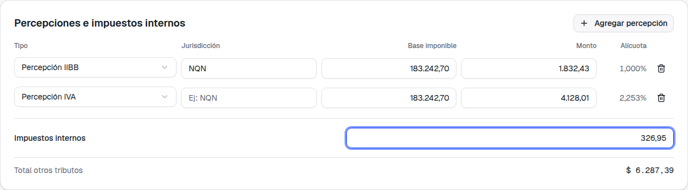
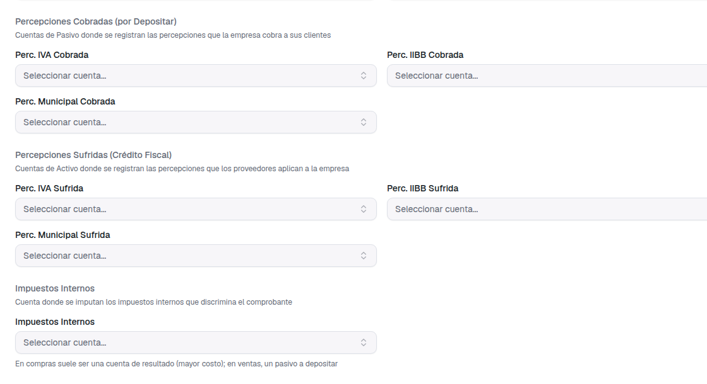

Guía de presentación — qué pedías, qué cambió y cómo usarlo
1. Qué pedías
Nos escribiste mientras pasabas una factura de La Anónima de Bejerman a PMS, y viste que no
había dónde cargar dos cosas que el comprobante sí trae:
"Justo estoy pasando a Bejerman en PM, y veo que si tuviera que cargar la misma factura en
PMS en este sistema no tiene la parte de cargar las percepciones ni el impuesto interno."
— Elizabeth Pérez
La factura que adjuntaste discriminaba Percep. NQN $1.832,43,
Percep. IVA $4.128,01 e IMP. INTERNOS $326,95. Sin un lugar
donde cargarlos, la única forma de que el total cerrara era inventar líneas de gasto, lo que
ensuciaba el neto gravado y distorsionaba el Libro IVA.
2. Qué cambió en pantalla
Antes
La factura solo permitía cargar ítems con su IVA. Las percepciones y los impuestos
internos no tenían lugar: había que sumarlos como si fueran una línea de mercadería más,
con lo cual quedaban contados como neto gravado.
Ahora
Debajo de los ítems aparece la sección Percepciones e impuestos internos.
Se cargan tal como los imprime el comprobante y forman parte del total, del asiento
contable y del Libro IVA, sin tocar el neto gravado. Está tanto en facturas de compra
como de venta.
3. Cómo se usa — la misma factura de La Anónima
Cargá los ítems como siempre. En este caso, los dos netos del
comprobante: $91.957,84 al 21% y $91.284,86 al 10,5%.
Agregá cada percepción. Con el botón "Agregar percepción" se suma una
fila: elegís el tipo (IVA, IIBB o Municipal), escribís la jurisdicción si corresponde
—NQN, en este caso— y cargás el monto que figura en la factura. La
base imponible viene sugerida con el neto gravado y podés cambiarla si
tu régimen calcula sobre otra base.

Las dos percepciones de la factura y el impuesto interno ya cargados. Abajo,
el total de otros tributos: $6.287,39.
La alícuota se calcula sola. No hace falta cargarla: sale de dividir el
monto por la base. En la captura de arriba se ve 1,000% para la percepción de IIBB y
2,253% para la de IVA. Sirve para contrastar contra el comprobante del proveedor: si la
alícuota que muestra no es la que esperabas, algún importe está mal tipeado.
Cargá los impuestos internos. Van como un único monto al pie de la
sección, tal como los imprime el comprobante: $326,95.
Revisá el total. El panel de Totales suma un renglón nuevo,
Otros tributos, con las percepciones más los impuestos internos, y lo
incluye en el total del comprobante.
El total de la factura queda en $218.426,15, contra los $218.426,14 que
imprime el ticket: la diferencia de un centavo es el redondeo del IVA en el emisor, no
un error de carga.
Ese total con tributos incluidos es el que después se usa para el saldo con el
proveedor y para armar la orden de pago; en ventas, para el saldo a cobrar.
4. Qué configuración hace falta
Las cuentas contables de los tributos
Para que una factura con percepciones o impuestos internos se pueda confirmar, esos
tributos necesitan su cuenta contable asignada en Empresa → Contabilidad →
Configuración. Son tres secciones nuevas al final del formulario de integración
comercial.

Las cuentas a configurar: percepciones cobradas (las que tu empresa le cobra al
cliente, un pasivo a depositar), percepciones sufridas (las que te aplican los proveedores,
crédito fiscal) e impuestos internos.
Se configuran una sola vez. Alcanza con cargar las que la empresa
efectivamente usa: si nunca te aplican percepciones municipales, esa cuenta puede quedar
vacía.
⚠ Si falta una cuenta, la factura no se confirma
Si intentás confirmar una factura con un tributo cuya cuenta no está configurada, el
sistema no deja confirmar y te dice exactamente cuál falta cargar.
Puede parecer molesto, pero es a propósito, y corrige algo que venía fallando en silencio:
el total de la factura incluye el tributo, así que si el asiento no tiene dónde imputarlo, no
cierra. Antes, en esa situación, la factura quedaba confirmada pero sin asiento
contable, y nadie se enteraba hasta revisar el libro diario semanas después.
Ahora el problema se ve en el momento, con el nombre de la cuenta que hay que configurar.
5. Dónde se ven después
✓En el detalle de la factura y en su PDF, cada
percepción aparece como un renglón propio con su tipo y jurisdicción ("Percepción IIBB
NQN"), y los impuestos internos en el suyo. Antes había un único renglón "Otros
Impuestos" que no explicaba de qué se trataba.
✓En el Libro IVA, las percepciones van en la columna "Perc." y los
impuestos internos en "Imp. Int.".
✓En el asiento contable, cada percepción se imputa a su cuenta y los
impuestos internos a la suya, y el asiento cierra contra el total del comprobante.
✓En el Libro IVA Digital y en la emisión electrónica de
facturas de venta, los tributos se informan a AFIP en los campos que corresponden
a cada uno.
6. Qué no cambió
✓Una factura sin percepciones ni impuestos internos se carga
exactamente igual que antes: la sección queda vacía y el total no cambia. No hay nada
nuevo que completar en las facturas de siempre.
✓Las retenciones siguen donde estaban, en el circuito de pagos y
cobros. Son otra cosa: la retención se practica al pagar, la percepción viene en la
factura.
✓Las facturas ya cargadas quedan intactas. Los tributos se pueden
agregar a cualquier factura que todavía esté en borrador; una vez confirmada, no se
modifica, igual que hasta ahora.
✓La importación de comprobantes de AFIP sigue funcionando igual.
Como AFIP informa los tributos en un único importe sin desglosar, entran como impuestos
internos; si querés separarlos, editás la factura en borrador y bajás ese monto a medida
que cargás cada percepción.